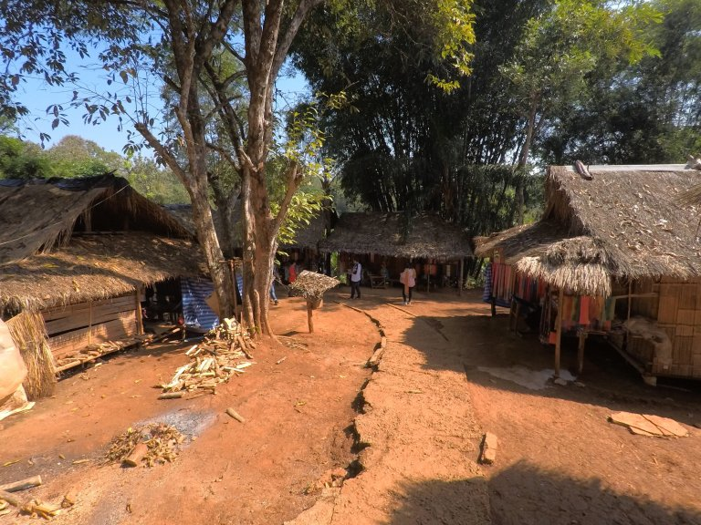
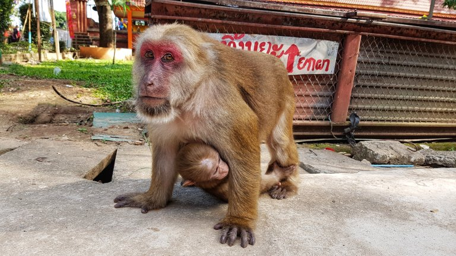

Proprio come ogni turista che visita la cittadina e la regione di Chiang Rai, abbiamo ceduto anche noi alla tentazione di riservare un tour di un singolo giorno che ci avrebbe portato a vedere i maggiori posti d’interesse della zona.
Il titolo del post si riferisce infatti al grande numero di attrazioni che siamo riusciti a visitare (alcune, purtroppo, troppo velocemente) durante la giornata.
Il punti principali previsti dall’agenzia che abbiamo scelto erano i seguenti:
- Templio Bianco
- Templio Blu
- Casa Nera
- Long Neck Village
- Monkey temple
- Piantagione di The
- Triangolo d'oro
- Museo dell'oppio
La partenza
Ecco che alle 8:45 puntualissimo (almeno per i canoni thailandesi [partenza prevista tra le 8:00 e le 8:30]) ci passa a prendere in albergo la guida che ci avrebbe accompagnato durante la giornata. Scopriremo poi prima di arrivare all’entrata del templio bianco, che la nostra guida era una guida per definizione: guidava l’auto e basta.
Templio Bianco (Wat Rong Khun)
Diverso da tutti gli altri templi e santuari visitati fino ad ora, questo ci ha lasciati a bocca aperta! Non so se era per il suo colore così candido e per i riflessi di luce che si creavano sulle sue pareti grazie a schegge di specchio incastonate nelle mura, o per i tantissimi e diversi dettagli presenti in ogni parte della costruzione.
L’interno, invece, ci è sembrato ancor più particolare: al posto delle rifiniture in oro che normalmente sono presenti all’interno di ogni templio, qui trovavamo un insieme di disegni in stile moderno raffiguranti personaggi “famosi”, tra cui: Pikachu, Spiderman e Ironman. A quanto pare, nel progettare la struttura e le decorazioni, il pittore visionario Chalermichai Kositpipat decise di utilizzare figure della cultura moderna occidentale per rappresentare il Buddhismo come lo vedeva lui. (Mah?!)
Purtroppo, a causa del copyright delle figure rappresentate all’interno del templio non era possibile scattare alcuna foto..
Dopo 40 minuti torniamo alla nostra guida. La giornata ha previsto molte ore di macchina in compagnia del nostro autista indiano un po’ pazzo. Ci ha raccontato di una volta in cui si è addormentato per lunghe tratte ubriaco al volante (questo per lui non era un problema siccome “la strada era dritta” cit.), o di altre volte in cui a lui (e soltanto a lui) bastavano 2 ore di sonno per riprendersi da una sbronza e tornare al lavoro (grazie di avercelo detto mentre ci trasportava). Un’altra perla sulla guida è che bisogna seguire l’istinto e non pensare se si hanno dubbi. Ci ha infine illustrato la bellezza dell’India: “non consiglio alle donne di viaggiarvi da sole perché è pieno di stupratori.. Però, a parte questo dettaglio, è molto bella”.
Long Neck Village
Dopo aver visitato velocemente il templio Blu e la casa Nera (non ci sono piaciuti un granché ad essere sinceri, forse per il troppo poco tempo lasciatoci a disposizione per visitarli come avremmo voluto) siamo arrivati al Long Neck Village: una zona delimitata nascosta tra bananeti e coltivazioni di ananas in cui sono state accolte 5 tribù “tradizionali” tra cui anche quella dalle donne con il collo lungo.
Entrati nel primo dei cinque villaggi ci siamo subito resi conto che più di un insieme di villaggi tradizionali, quelli che avremmo visto sarebbero state una serie di case adibite alla vendita di souvenir “fatti dagli abitanti” (erano tutti identici, probabilmente uguali a quanto trovavamo nei mercati turistici in città) in cui donne vestite con abiti tradizionali cercavano di vendere la merce.
La visita ai cinque villaggi ci ha lasciati un po’ in uno stato di delusione e sconforto. Questo perché, passeggiando tra le case davanti alle quali erano esposte delle donne come fossero quadri, e dopo aver visto altri turisti che (secondo noi molti irrispettosamente) le fotografavano più volte anche da vicino senza nemmeno chiedere (proprio come fossero opere d’arte inanimate o animali) non abbiamo saputo far altro che immedesimarci nella loro situazione: vestirsi ogni giorno con i propri abiti tradizionali (tra cui pesanti anelli attorno a collo e caviglie, che originalmente fungevano da protezione contro eventuali attacchi di animali selvatici) e sedersi davanti a casa per aspettare di essere fotografate e osservate da turisti e sorridere.
Questa è una delle pochissime foto che ci siamo sentiti di fare, dopo aver chiesto alle due donne se fossero state d’accordo, e soprattutto cercando di trattarle come persone.
Monkey Temple
Un po’ titubanti ad entrare nel templio delle scimmie (soprattutto dopo che ci è stato detto di equipaggiarci di un bastone di bamboo per difenderci in caso di scimmie aggressive) abbiamo dedicato rapida visita ad osservare le scimmiette (quelle piccole erano dolcissime e simpatiche, mi volevano rubare la gopro).
Piantagione di The
Sulla strada per arrivare al triangolo d’oro, abbiamo fatto sosta in una piantagione di the. Qui le foreste e piantagioni di banane lasciavano spazio a colline verdi di cespugli di the.
Con questa vista da film abbiamo assaggiato uno smoothie a base di the e un gelato alla vaniglia.
Triangolo d'oro
Con il nome Triangolo d’oro ci si riferisce alla zona che comprende il punto d’incontro tra Thailandia, Laos e Myanmar. Un insieme di fiumi che si uniscono nel Mekong delimita questi confini, e su di un isoletta (appartenente al Laos) nel centro di questo incrocio fluviale, si sviluppa un mercato che vende merci di ogni genere.
L’attraversamento del fiume è risultato essere più divertente di quanto programmato, in quanto il capitano della barca (forse abituato a navigazioni da contrabbando) non sembrava riuscire a dosare il gas in maniera sensibile.
Giunti sull’isola di Donsao ci siamo inoltrati nel mercato, dove ogni negozietto/bancarella cercava di attirare la nostra attenzione come potenziali clienti.
Una bancarella mi ha fatto assaggiare dei bicchierini di distillati locali aromatizzati con scorpioni e pene di tigre.

10 dollari dopo, due occhiali in più e tante contrattazioni dopo, siamo sulla via del ritorno verso la Thailandia.
Di seguito alcune foto del resto della giornata:
Comment Section